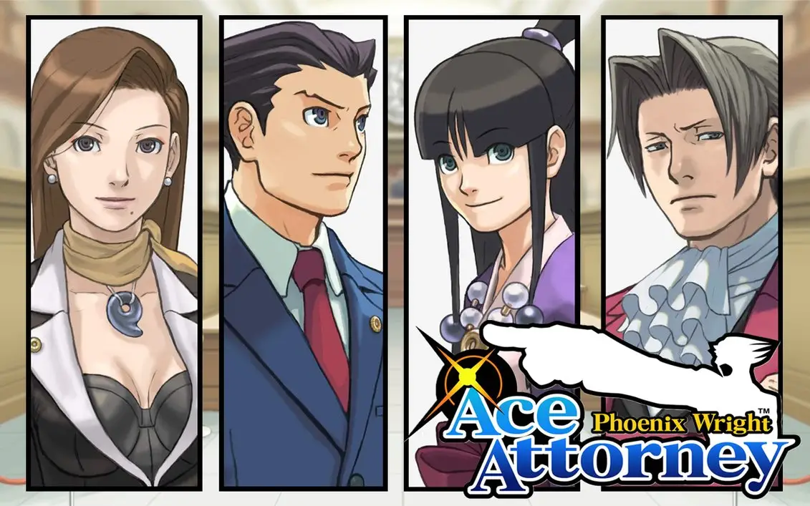

Me llamo Phoenix Wright y soy abogado defensor. Al principio, no tenía la intención de seguir esta carrera, pues en la Universidad de Harkley estudiaba arte. Sin embargo, un incidente en el que fui acusado injustamente cambió mi destino. Gracias a la brillante defensa de Mia Fey, comprendí la importancia de luchar por la verdad y decidí convertirme en abogado defensor. Mia no solo me enseñó las bases del derecho, sino que me mostró que un abogado no solo lucha con la ley, sino también con el corazón.
A lo largo de mi carrera, me he enfrentado a implacables fiscales como Miles Edgeworth y Franziska von Karma, entre otros. Cada juicio ha sido una batalla en la que la verdad ha estado en juego.
Aunque dirijo mi propio bufete, hubo un tiempo en el que perdí mi distintivo de letrado debido a un caso que quedó inconcluso. Fui engañado y acusado de falsificar pruebas, lo que me obligó a alejarme de los tribunales durante seis años. Sin embargo, no me rendí. Finalmente, descubrí la verdad detrás de aquel caso y recuperé mi licencia, demostrando que la justicia siempre prevalece.
Hoy en día, sigo ejerciendo como abogado defensor, luchando por lo que creo: que todo acusado merece una defensa justa.
Dentro de mis aficiones, me encanta jugar al ajedrez. Tambien tengo una gran colección de figuras de acción y me entusiasma la serie animada del samurai de acero.
Tambien soy un gran jugador de póker, donde no he perdido ninguna partida, y ocasionalmente me gusta practicar con el piano. Por último, siempre que tengo algún hueco para comer, lo aprobecho para disfrutar un gran plato de ramen bien cargado de fideos.
Durante varios años he ejercicido de abodago defensor, hasta que, debido a un malentedido relacionado con unas pruebas falsas perdí mi distintivo de abogado. Durante esos años me hice jugador profesional de poker, nunca sin perder mi gran sentido de la justicia, hasta que finalmente pude recuperar mi licencia de abogado, y volver a defender a aquellos que merecen ser defendidos.
